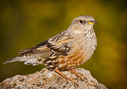
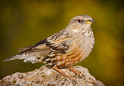

| Alpine Accentor | |
|---|---|
|  | |
| Alpine Accentor (adult) | |
| Conservation status | |
| Binomial name | |
| Prunella collaris (Scopoli, 1769) |
| Alpine Accentor | |
|---|---|
|  | |
| Alpine Accentor (adult) | |
| Conservation status | |
| Binomial name | |
| Prunella collaris (Scopoli, 1769) |
The Alpine Accentor, Prunella collaris, is a small passerine bird found throughout the mountains of southern temperate Europe and Asia at heights above 2000 m. It is mainly resident, wintering more widely at lower latitudes, but some birds wander as rare vagrants as far as Great Britain.
It is a bird of bare mountain areas with some low vegetation. It builds a neat nest low in a bush or rock crevice, laying 3-5 unspotted sky-blue eggs.
This is a Robin-sized bird at 15-17.5 cm in length, slightly larger than its relative, the Dunnock. It has a streaked brown back, somewhat resembling a House Sparrow, but adults have a grey head and red-brown spotting on the underparts. It has an insectivore's fine pointed bill.
Sexes are similar, although the male may be contrasted in appearance. Young birds have browner heads and underparts.
The mating system is of particular interest. Home ranges are occupied by breeding groups of 3 or 4 males with 3 or 4 females. These are unrelated birds which have a socially polygynandrous mating system. Males have a dominance hierarchy, with the alpha males being generally older than subordinates. Females seek matings with all the males, although the alpha male may defend her against matings from lower ranking males. In turn, males seek matings with all the females. DNA fingerprinting has been used to show that, within broods, there is often mixed paternity, although the female is always the true mother of the nestlings raised within her nest. Males will provide food to chicks at several nests within the group, depending on whether they have mated with the female or not - males only provide care when they are likely to be the true fathers of the chicks.

{kind=link}